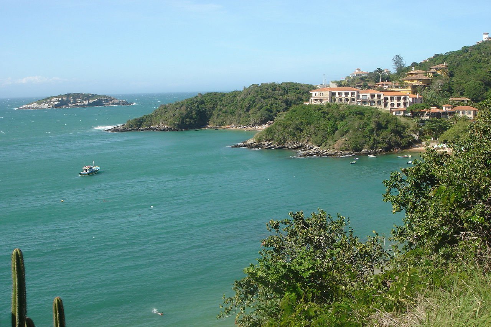
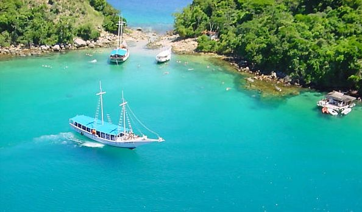

Armação dos Búzios o, simplemente, Búzios es una ciudad brasileña situada en el Estado de Río de Janeiro, en la costa brasileña, a 190 kilómetros al este de Río de Janeiro. Esta antigua aldea de pescadores hoy es un destino turístico que atrae cada año a turistas en busca de sus playas y vida nocturna. Su población es de 30 4392 habitantes y su área de 69 km².
Está localizada en una península de 8 km de extensión con 23 playas. Por un lado recibe corrientes ecuatoriales y por el otro las provenientes del Polo Sur, lo que hace que tenga playas con aguas cálidas y heladas a la vez. Entre las principales playas se destacan Geribá, João Fernandes, Ferradura, Ferradurinha, Rasa, Manguinhos, Tartaruga, Brava e Olho-de-Boi, esta última reservada para la práctica del nudismo. Está a casi 27 km de Cabo Frío, la ciudad más cercana, de cuyo municipio dependió administrativamente hasta 1995.
Sus fuertes vientos son ideales para la práctica de la vela y el vuelo libre.
Es una ciudad que alberga diversas culturas con un gran número de extranjeros.
Deja tu comentario


Angra dos Reis es una ciudad litoránea brasileña ubicada en el Estado de Río de Janeiro, a una distancia de 151 km de la capital del estado. Tiene una superficie total de 816,3 km², correspondiendo 193 km² del total a 365 islas -la mayor de las cuales es Ilha Grande- e islotes.
Las actividades económicas más importantes de la ciudad son las actividades portuarias, el comercio y los servicios, algunas industrias, la producción de energía nuclear (los dos reactores nucleares brasileños de la Central nuclear Almirante Álvaro Alberto están ubicados en el municipio) y el turismo en sus playas, islas y buceo.
El origen del nombre del lugar es el siguiente: Gaspar de Lemos, al mando de una flota naval portuguesa, encalló en la isla Grande (Ilha Grande) el 6 de enero de 1502, el Día de Reyes (en portugués, Dia de Reis). Así que el lugar fue bautizado «Angra dos Reis», que significa «Ensenada de los Reyes».